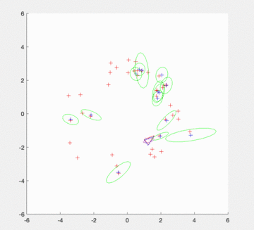

Perception and Navigation
2D SLAM

General Principle
SLAM is a space exploration method that can be used when the environment in which an autonomous system evolves is not well known. In that case, you want to map and compute the estimated position of the robot in this environment from what you can see (LIDAR, Camera, …). The autonomous system can also incorporate other sensors to measure movement (accelerometers, gyrometers, …).
The SLAM method is based on three main operations which are triggered at each time step:
- The autonomous system moves which leads to an increased uncertainty on the robot’s localization. For this step a motion model is required.
- The autonomous system spots landmarks which will be added to the map. Because of errors of the sensors, the location of these landmarks is uncertain. Moreover, the position of the robot is uncertain as well, thus we need to take both these uncertainties into account. For this operation, an inverse observation model is required to estimate the position of the landmarks from the sensor data.
- The robot spots known and uses them to correct both the estimation of its own location and the estimation of the location of all landmarks. This operation decreases the uncertainty on the location of the robot and the location of the landmark. For this step a direct observation model is require to predict the measures from the predicted landmark location and robot location.
With these three models and an estimator, a SLAM solution can be implemented. For this course, we have used an extended Kalman filter (EKF).
| Event |
SLAM |
EKF |
| Robot moves |
Robot motion |
EKF prediction |
| Sensor detects new landmark |
Landmark intialization |
State augmentation |
| Sensor observes known landmark |
Map correction |
EKF correction |
| Mapped landmark is not wanted |
Landmark deletion |
State reduction |
Results
As we can see on the gif figure below, the SLAM can be a powerful technique to estimate the positiion of an autonomous system
while mapping the environment. Indeed, we can see that uncertainties are relatively limited and the estimated positions of the landmarks and the
autonomous car are relevant.